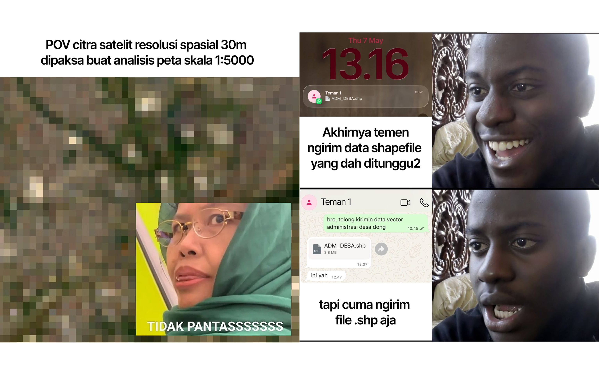
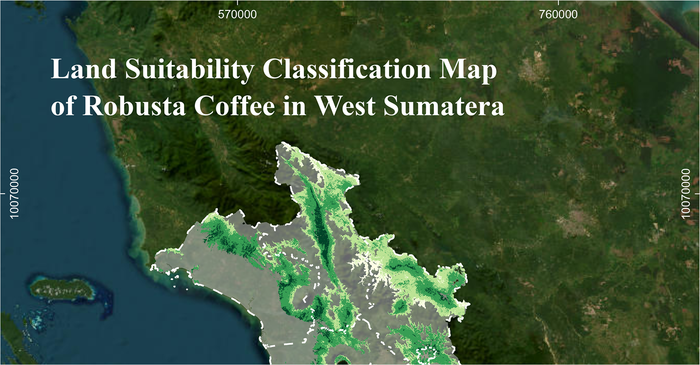
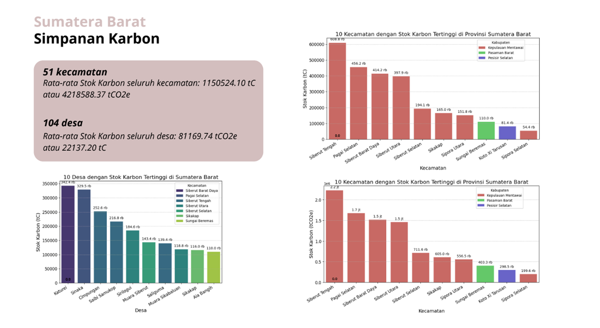
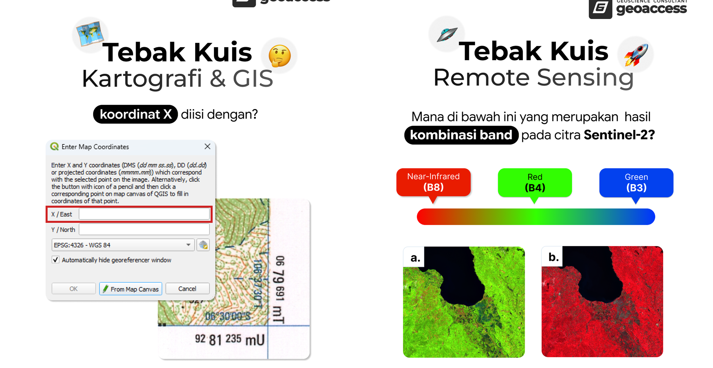

Portofolio Pilihan

Seri tutorial video dan poster edukasi GIS & Remote Sensing untuk akun Geoaccess Indonesia (48K+ followers) — mulai dari cara unduh data REST Service hingga otomasi layout peta di QGIS.

Kampanye meme geospasial yang berhasil menembus 15.000+ likes organik dan mendatangkan ~500 followers baru dalam satu postingan — membuktikan pendekatan humor teknis dapat meningkatkan jangkauan secara signifikan.

Analisis kesesuaian lahan produksi kopi seluas ~42.000 km² menggunakan metode overlay multi-kriteria dengan 12 parameter spasial, sebagai deliverable untuk WRI Indonesia.
Migrasi Sistem
Memimpin migrasi penuh ~5.000 akun pengguna dan ~10.000 transaksi dari Mayar ke sistem WordPress/TutorLMS/WooCommerce, memastikan integritas data secara menyeluruh.

Analisis kerentanan pesisir menggunakan modul CVI InVEST di Riau dan Sumatera Barat, dikombinasikan dengan estimasi stok karbon mangrove menggunakan Google Earth Engine.

Konten kuis interaktif bertema GIS dan Remote Sensing untuk meningkatkan engagement audiens — mulai dari soal koordinat QGIS hingga identifikasi kombinasi band Sentinel-2.

Merancang modul pelatihan, poster promosi, dan sertifikat resmi untuk program pelatihan GIS dan Remote Sensing Geoaccess Indonesia — termasuk bootcamp Google Earth Engine multi-sesi.